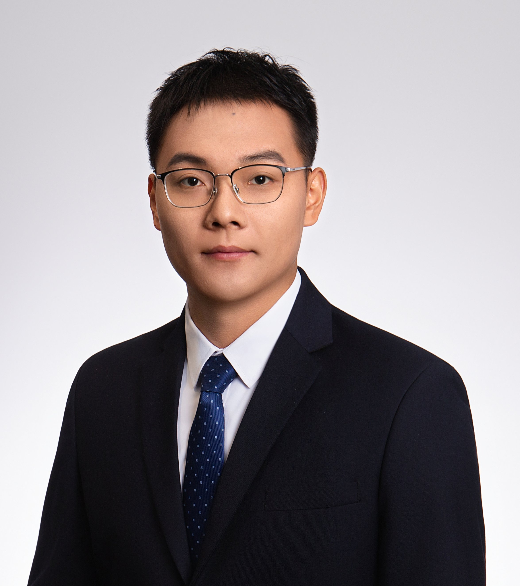 |
Xinyang LiAssistant ProfessorCollege of AI, Tsinghua University Email: xinyangli@tsinghua.edu.cn Institutional Homepage • Team • Google Scholar • GitHub |
About Me
- I am an assistant professor of College of AI at Tsinghua University.
- Previously, I was a postdoctoral research fellow at the Department of Automation of Tsinghua University, working with Prof. Qionghai Dai, academician of Chinese Academy of Engineering.
- I received my Ph.D. degree at the Department of Automation of Tsinghua University in 2023, advised by Prof. Qionghai Dai and Prof. Haoqian Wang.
- My interest focuses on interdisciplinary research of AI and imaging, particularly intelligent imaging and intelligent image analysis. I'm enthusiastic about empowering scientific observation with AI to accelerate scientific discovery
- 📢 I am recruiting self-motivated Ph.D and intern students interested in AI, optical imaging, quantum imaging, and robotics. If you are interested in my research, please feel free to contact me.
News
- [2026/02/19] 1 paper is accepted by Science!
- [2026/01/06] 1 paper is accepted by Nature Methods!
- [2025/12/12] 1 papers is accepted by Nature Communications!
- [2025/11/06] Invited keynote talk by ACAIC 2025!
- [2025/08/28] 1 papers is accepted by Nature Communications!
- [2025/08/05] Awarded the Photonix Prize for empowering scientific observation with AI to accelerate discovery!
- [2025/07/27] Invited talk by WAIC 2025!
- [2025/07/11] Selected as a Youth Editorial Board member by PhotoniX (IF=19.8)!
- [2025/04/10] Invited oral presentation by Optica Biophotonics Congress 2025!
- [2024/08/07] Our paper was cited by Nobel laureate Eric Betzig in his Nature Methods commentary!
Selected Publications
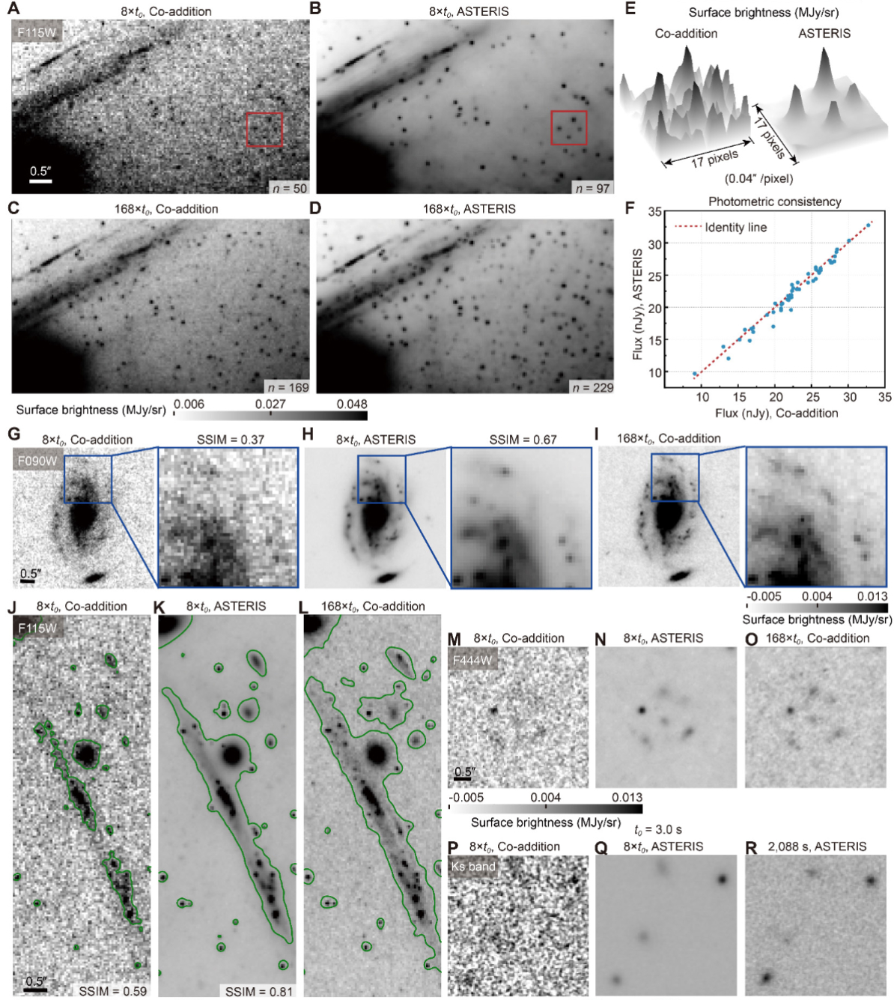 |
Yuduo Guo, Hao Zhang, Mingyu Li, Fujiang Yu, Yunjing Wu, Yuhan Hao, Song Huang, Yongming Liang, Xiaojing Lin, Xinyang Li, et al. Deeper detection limits in astronomical imaging using self-supervised spatiotemporal denoising. Science, 2026 [Link][PDF][Code] |
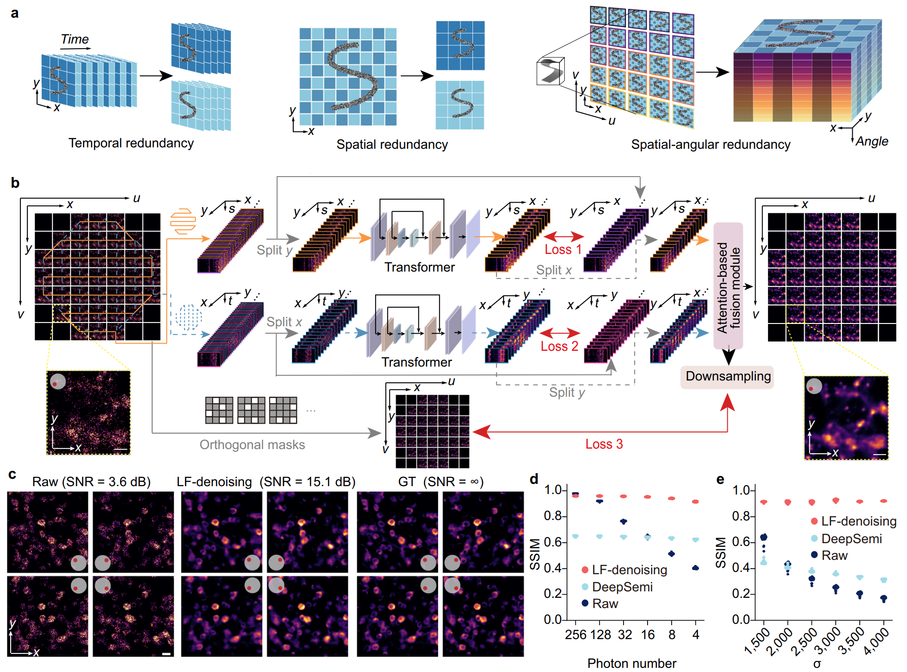 |
Zhi Lu, Wentao Chen, Feihao Sun, Jiaqi Fan, Xinyang Li, et al. Leveraging spatial-angular redundancy for self-supervised denoising of 3D fluorescence imaging without temporal dependency. Nature Communications, 2025. [Link][PDF][Code] |
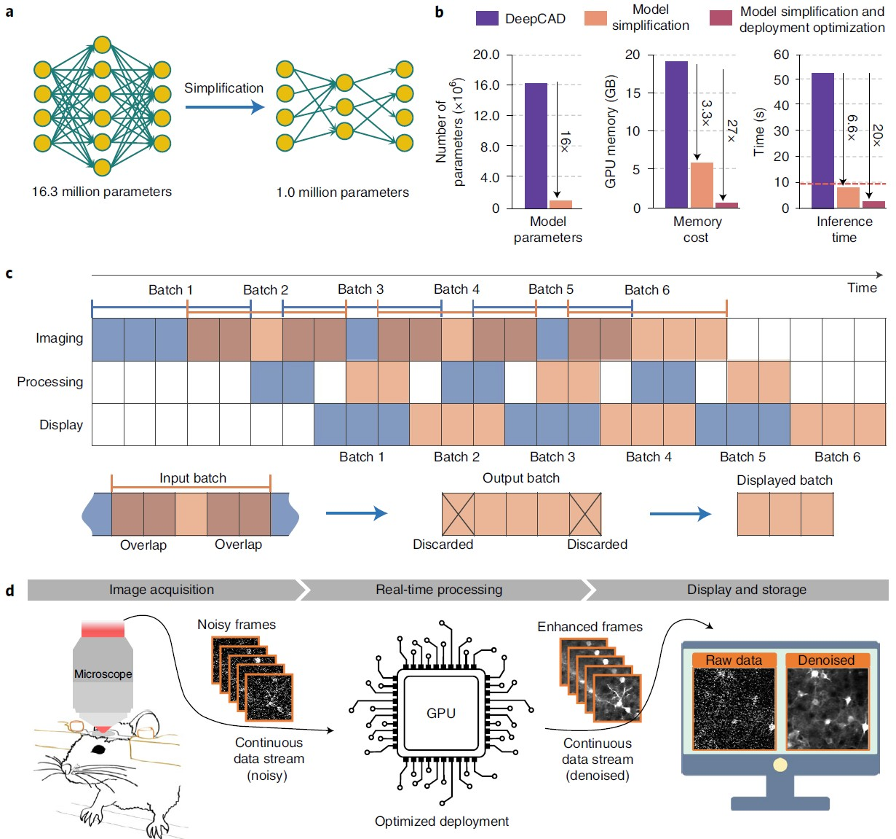 |
Xinyang Li, Yixin Li, Yiliang Zhou, Jiamin Wu, Zhifeng Zhao, Jiaqi Fan, Fei Deng, Zhaofa Wu, Guihua Xiao, Jing He, et al. Real-time denoising enables high-sensitivity fluorescence time-lapse imaging beyond the shot-noise limit. Nature Biotechnology, 2023. [Link][PDF][Code] |
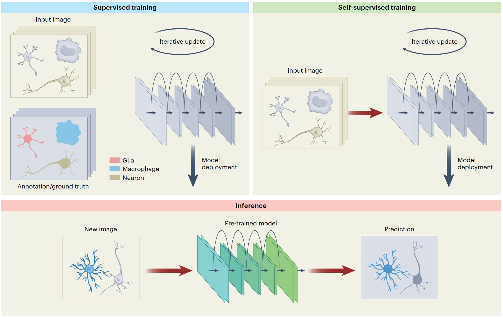 |
Xinyang Li, Yuanlong Zhang, Jiamin Wu, and Qionghai Dai. Challenges and opportunities in bioimage analysis. Nature Methods, 2023. [Link][PDF] |
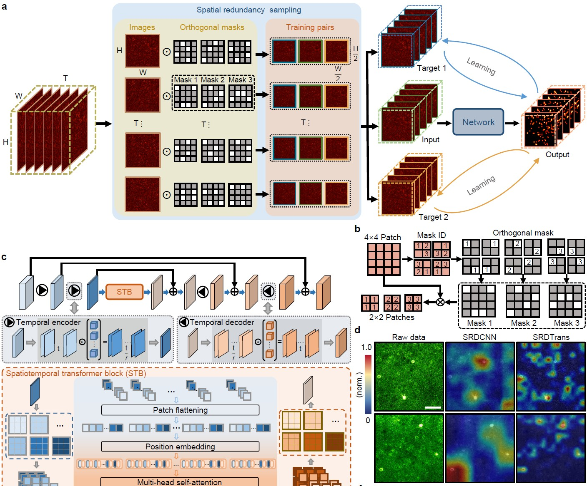 |
Xinyang Li, Xiaowan Hu, Xingye Chen, Zhifeng Zhao, Jiaqi Fan, Jiamin Wu, Haoqian Wang, Qionghai Dai. Spatial redundancy transformer for self-supervised fluorescence image denoising. Nature Computational Science, 2023. [Link][PDF][Code] |
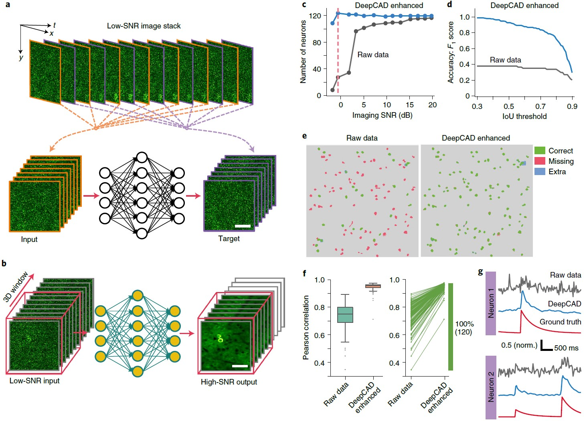 |
Xinyang Li, Guoxun Zhang, Jiamin Wu, Yuanlong Zhang, Zhifeng Zhao, Xing Lin, Hui Qiao, Hao Xie, Haoqian Wang, et al. Reinforcing neuron extraction and spike inference in calcium imaging using deep self-supervised denoising. Nature Methods, 2021. [Link][PDF][Code] |
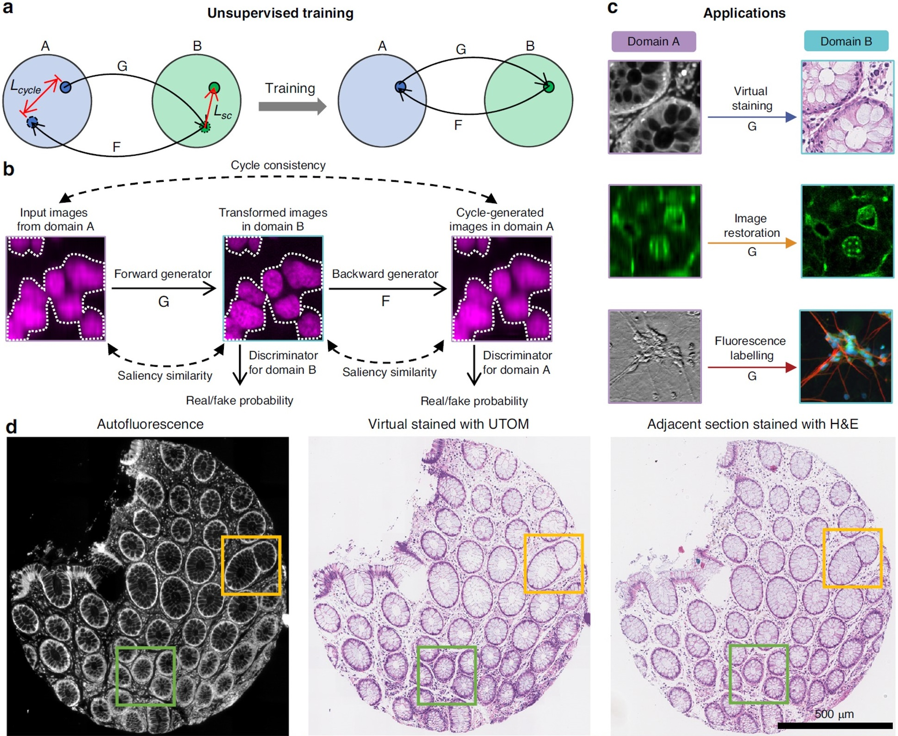 |
Xinyang Li, Guoxun Zhang, Hui Qiao, Feng Bao, Yue Deng, Jiamin Wu, Yangfan He, Jingping Yun, Xing Lin, Hao Xie, et al. Unsupervised content-preserving transformation for optical microscopy. Light: Science & Applications, 2021. [Link][PDF][Code] |
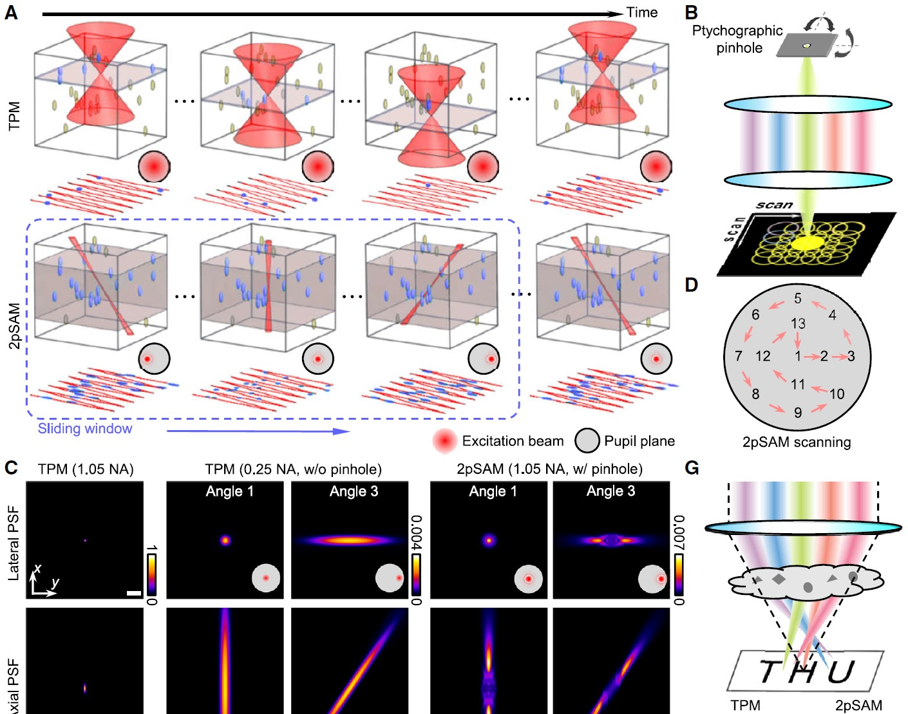 |
Zhifeng Zhao, Yiliang Zhou, Bo Liu, Jing He, Jiayin Zhao, Yeyi Cai, Jingtao Fan, Xinyang Li, Zilin Wang, Zhi Lu, et al. Two-photon synthetic aperture microscopy for minimally invasive fast 3D imaging of native subcellular behaviors in deep tissue. Cell, 2023. [Link][PDF][Code] |
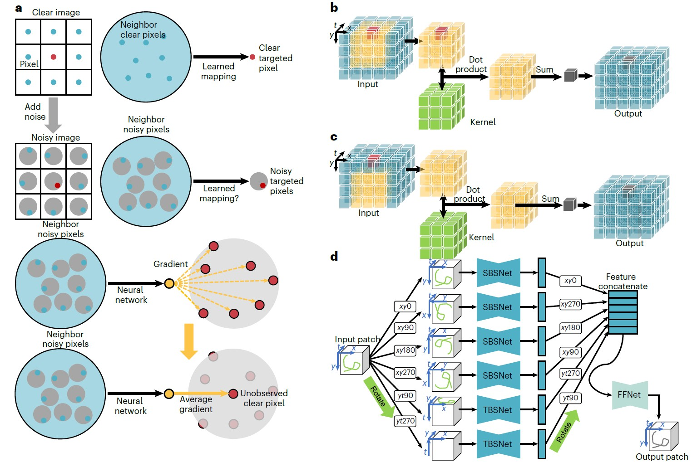 |
Guoxun Zhang, Xiaopeng Li, Yuanlong Zhang, Xiaofei Han, Xinyang Li, Jinqiang Yu, Boqi Liu, Jiamin Wu, Li Yu, Qionghai Dai. Bio-friendly long-term subcellular dynamic recording by self-supervised image enhancement microscopy. Nature Methods, 2023. [Link][PDF][Code] |
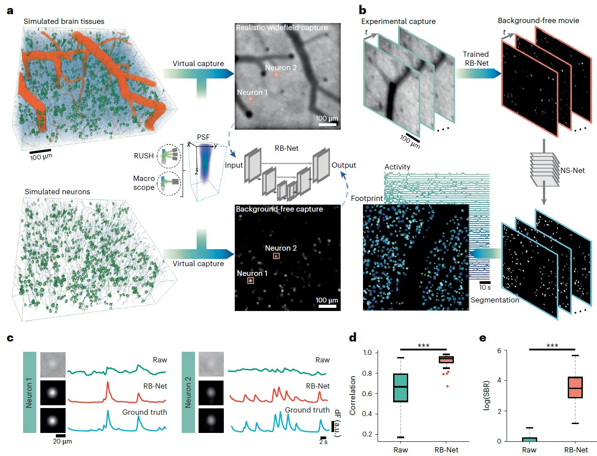 |
Yuanlong Zhang, Guoxun Zhang, Xiaofei Han, Jiamin Wu, Ziwei Li, Xinyang Li, Guihua Xiao, Hao Xie, Lu Fang, Qionghai Dai. Rapid detection of neurons in widefield calcium imaging datasets after training with synthetic data. Nature Methods, 2023. [Link][PDF][Code] |
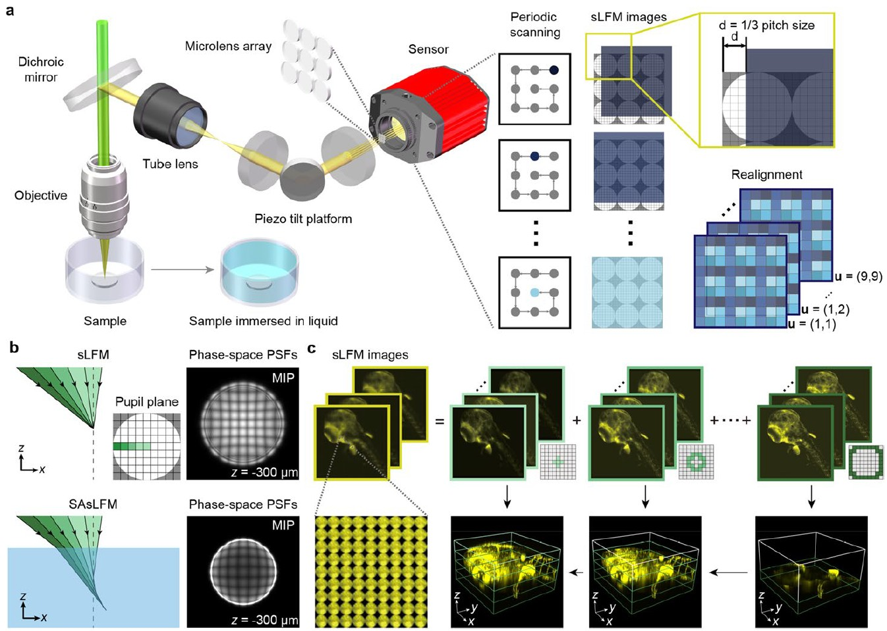 |
Yi Zhang, Yuling Wang, Mingrui Wang, Yuduo Guo, Xinyang Li, Yifan Chen, Zhi Lu, Jiamin Wu, Xiangyang Ji, Qionghai Dai. Multi-focus light-field microscopy for high-speed large-volume imaging. PhotoniX, 2023. [Link][PDF] |
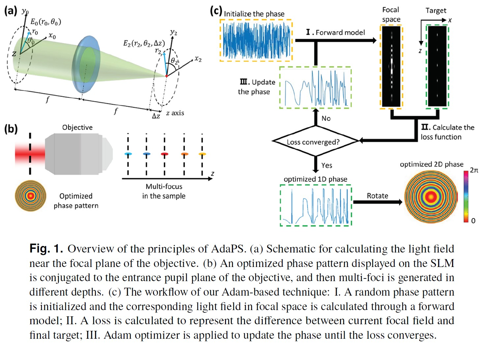 |
Xinyang Li, Yuanlong Zhang, Kan Liu, Hao Xie, Haoqian Wang, Lingjie Kong, Qionghai Dai. Adaptive optimization for axial multi-foci generation in multiphoton microscopy. Optics Express, 2019. [Link][PDF][Code] |
Lectures
- Xinyang Li, “Empowering scientific observation with AI to accelerate scientific discovery”, Annual Conference on Analytical Instruments of China, Keynote Speaker, November 2025.
- Xinyang Li, “Advancing scientific observation with AI to accelerate scientific discovery”, Conference on Cutting-Edge Interdisciplinary Research in Optical Engineering, Invited talk, August 2025.
- Xinyang Li, “Artificial intelligence enables ultrasensitive imaging beyond the shot-noise limit”, World Artificial Intelligence Conference, Invited talk, July 2025.
- Xinyang Li, “Deep self-supervised denoising enables ultrasensitive fluorescence imaging beyond the shot-noise limit”, The 3rd CAAl International Conference on Artificial Intelligence, invited talk on intelligent microscopy, July 2023.
- Xinyang Li, “Deep self-supervised denoising enables ultrasensitive fluorescence imaging beyond the shot-noise limit”, Tsinghua IDG/McGovern Institute for Brain Research, Seminar on Neuroscience Frontiers, September 2022.
- Xinyang Li and Guoxun Zhang, “High-fidelity fluorescence image restoration using deep unsupervised learning”, OSA Biophotonics Congress, Oral Presentation, April 2020.
Professional Activities
- Organizer and Scientific Committee member, Nature Conference, September 2026.
- Invited Visitor, KTH Royal Institute of Technology, November 2025.
- Invited Visitor, University of Cambridge/University College London/Imperial College London/Francis Crick Institute, October 2025.
- Youth Editorial Board Member, PhotoniX (IF=19.8).
- Funding, National Natural Science Foundation of China.
- Reviewer, IEEE Transactions on Circuits and Systems for Video Technology.
- Reviewer, Scientific Reports
- Reviewer, Biomedical Optics Express.
- Funding, China Postdoctoral Science Foundation.
- Invited Visitor, Heidelberg University, October 2023.
- Invited Visitor, The University of Hong Kong, May 2023.
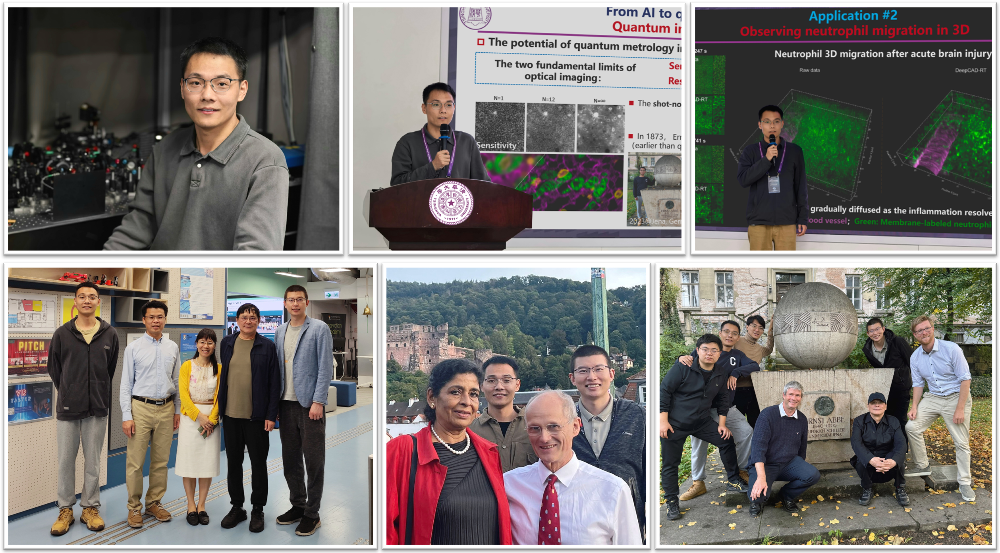
Photos with M.X. Huang , Head of the Department of Mechanical Engineering of HKU (bottom left); Jost B. Jonas and S. Panda-Jonas at Heidelberg (bottom middle); Rainer Heintzmann besides the famous Ernst Abbe Memorial at Jena (bottom right).
Awards and Honors:
- PhotoniX Prize, 2025.
- Shuimu Scholar Award, Tsinghua University, 2023.
- Outstanding Ph.D. Graduate of Beijing, 2023.
- Outstanding Ph.D. Graduate of Tsinghua University, 2023.
- Outstanding Doctoral Dissertation of Tsinghua University, 2023.
- Award for Excellent Academic Lecture, THU-IDG/McGovern Institute for Brain Research, 2023.
- National Scholarship, Tsinghua University, 2022.
- THU-IDG/McGovern Award for Outstanding Research Achievement, 2022.
- National Scholarship, Tsinghua University, 2021.
- First Prize for Outstanding Laboratory Contribution, Tsinghua University, 2021.
- Outstanding Graduate Student Leaders, Xi'an Jiaotong University, 2018.
- National Scholarship, Xi'an Jiaotong University, 2017.
- National Scholarship, Xi'an Jiaotong University, 2016.
- Outstanding Student Leaders, Xi'an Jiaotong University, 2016.
- National Scholarship, Xi'an Jiaotong University, 2015.